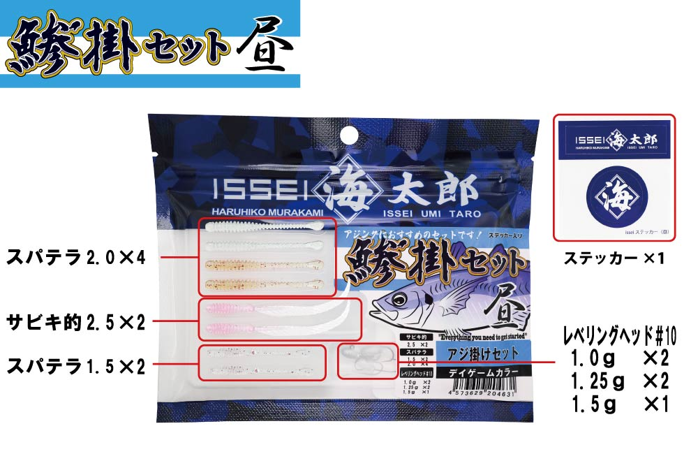
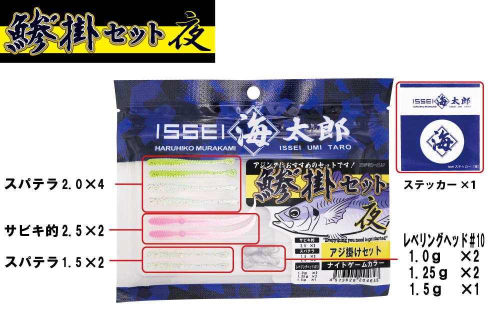

海太郎 アジ掛けセット
海太郎 アジ掛けセットは、村上晴彦さんのブランド「一誠（issei）」のソルトシリーズ「海太郎」から出た、アジング用のワームとジグヘッドのセットです。キャッチコピーは「これからアジングを始めたい方、必携！」。
海太郎のラインナップから厳選したワームとジグヘッドが1袋に入った「釣り場直行パッケージ」で、どれを買えばいいか迷わず、これ1つでアジングを始められるのが最大の特徴。昼用の「デイゲームカラー」と夜用の「ナイトゲームカラー」の2種類があります。

画像出典:イッセイ公式HP
スペック
- メーカー
- イッセイ（一誠／海太郎）
- タイプ
- アジング用ワーム＋ジグヘッドのセット
- ワーム
- スパテラ2.0×4・スパテラ1.5×2・サビキ的2.5×2
- ジグヘッド
- レベリングヘッド #10（1.0g×2・1.25g×2・1.5g×1）
- 付属
- オリジナルステッカー×1
- 種類
- デイゲームカラー／ナイトゲームカラー
- ターゲット
- アジ
- 価格
- 1,045円（税込）
- 発売
- 2026年10月
▼今すぐチェック
海太郎 アジ掛けセットの特徴
これからアジングを始めたい人の「釣り場直行パッケージ」
-
ワームとジグヘッドが1袋にそろう
海太郎の人気ワーム「スパテラ」（1.5インチ・2インチ）と「サビキ的」（2.5インチ）に、ジグヘッド「レベリングヘッド」の1.0g・1.25g・1.5gをセット。釣具店でたくさんの種類から選ばなくても、これ1つで釣り場に行ける。
-
長さと形のちがう3種類のワーム
細身のストレート系「スパテラ」は2つの長さ、テールの付いた「サビキ的」は少し大きめの2.5インチ。アジの食べているエサや反応に合わせて、ワームを替えながら試せる。
-
昼用・夜用の2種類
昼はクリア系やシラス系のカラーが入った「デイゲームカラー」、夜は光を蓄えて光るグローやチャートが入った「ナイトゲームカラー」。釣りに行く時間に合わせて選べる。おまけのステッカーも昼と夜で色が違う。
海太郎 アジ掛けセットの使い方
まずは1.0gのレベリングヘッドにスパテラ2.0を付け、キャストしたらカウントを数えながら沈め、アタリが出た深さ（レンジ）を覚えておくのが基本です。軽くロッドをあおって、ふわっと落とす間にアタリが出ることが多いです。
風が強い時や、もう少し深い所を探りたい時は1.25g・1.5gに替えましょう。反応がない時は、スパテラ1.5で小さく見せたり、サビキ的2.5で少し大きく見せたりと、ワームを替えて試すのがおすすめです。
海太郎 アジ掛けセットの得意な状況
これからアジングを始める人や、ワームとジグヘッドの組み合わせに迷っている人にぴったりです。
堤防の常夜灯まわりや港内など、アジが集まる身近な釣り場でそのまま使える組み合わせがそろっているので、初めてでもアジが釣れるまでの近道になります。ベテランなら、旅先や仕事帰りの予備セットとしても便利です。
ワンポイント
昼と夜のどちらのセットでも、同じジグヘッドのままワームのカラーと長さを先に替えてみると、アジが何に反応しているのかが分かりやすくなります。重さを替えるのは、ワームを替えても反応がない時や、底が取れない時にしましょう。
セット内容（デイゲームカラー・ナイトゲームカラー）
海太郎 アジ掛けセットは、昼用と夜用の2種類です。どちらもワーム8本・ジグヘッド5個・ステッカー1枚が入っています。
デイゲームカラー

| 中身 | カラー | 数 |
|---|---|---|
| サビキ的 2.5 | UVレインボー | 2本 |
| スパテラ 1.5 | UVクリアレインボーRDF | 2本 |
| スパテラ 2 | シラスレインボー | 2本 |
| スパテラ 2 | オキアミグロー | 2本 |
| レベリングヘッド #10 | 1.0g・1.25g・1.5g | 2個・2個・1個 |
ナイトゲームカラー

| 中身 | カラー | 数 |
|---|---|---|
| サビキ的 2.5 | ピンク（グロー） | 2本 |
| スパテラ 1.5 | 金銀シラス | 2本 |
| スパテラ 2 | チャート（グロー） | 2本 |
| スパテラ 2 | うまシロエビ（グロー） | 2本 |
| レベリングヘッド #10 | 1.0g・1.25g・1.5g | 2個・2個・1個 |
画像出典:イッセイ公式HP
▼今すぐチェック
海太郎 アジ掛けセットに似ているルアー
-
 げっかびじん アジングビーム2.0
ダイワ
詳細はこちら＞
げっかびじん アジングビーム2.0
ダイワ
詳細はこちら＞
アジングワームの定番。ワームだけ買い足すなら。
-
 げっかびじん アジングジグヘッドX
ダイワ
詳細はこちら＞
げっかびじん アジングジグヘッドX
ダイワ
詳細はこちら＞
ハイコスパなアジング用ジグヘッド。ジグヘッドを買い足すなら。
-
 あじどうワーム ゼロレジスト
メジャークラフト
詳細はこちら＞
あじどうワーム ゼロレジスト
メジャークラフト
詳細はこちら＞
水の抵抗を受けにくいアジングワーム。ほかのワームと比べるなら。